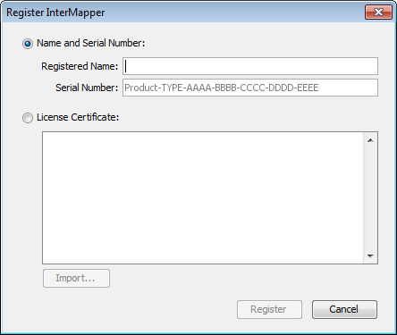
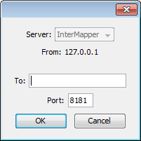
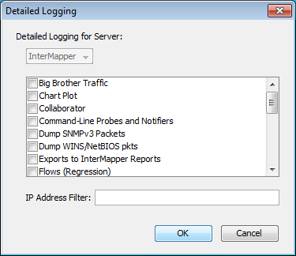
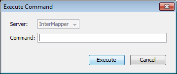

|
Opens the InterMapper software information page. Note: On Macintosh, this command is available from the InterMapper or IM RemoteAccess menu. |
|
| Register InterMapper..., Register InterMapper RemoteAccess |
Opens the InterMapper or InterMapper RemoteAccess registration window. |
|
Opens the InterMapper help system. |
|
| Send Feedback... |
|
|
Opens the Send Feedback window with a screenshot attached. |
|
|
Choose from a number of diagnostic commands, described below. |
Opens the InterMapper software information page. View information about the software and its contributors, as well as viewing information about memory use, platform, operating system and current

(InterMapper Only)
Opens the Register InterMapper (or InterMapper RemoteAccess) window. This is the same window displayed when you click Add... from the Registration pane, found in the Server Information section of the Server Settings window.


When detailed logging is on, a significant quantity of data can be logged
in a relatively short period. To conserve server disk space, use this feature
only when needed for troubleshooting.

InterMapper RemoteAccess can instruct a server to execute
certain commands, and to display the output in the Debug Log file. The major
command is